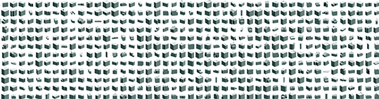
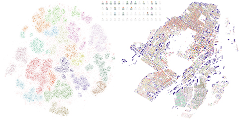
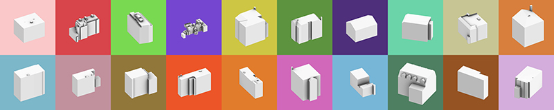

Typological analysis of building form is an important approach in urban morphology that can contribute to a deeper understanding of urban spaces. In this research, we present an inductive method, using machine and deep learning techniques, that incorporates a pipeline for constructing a building form dataset and analyzing the morphological identity of building forms in a city.

Samples of Montreal Building Dataset, Jinmo Rhee, 2023
The building form dataset comprises matrices of voxelized 3D building forms in the city. Using machine learning techniques to extract morphological features from the dataset, we can classify building forms into types.

20 Types of Building Forms in Montreal and their Distribution on Data Space (left) map space (right), Jinmo Rhee, 2023

Representative Building Forms of Each Type, Jinmo Rhee, 2023
To represent the characteristics of each type, we developed three main descriptors: principal axes of the morphological features, maps indicating the type of each building, and a representative building form. To illustrate this inductive method, we apply the pipeline to the city of Montreal to investigate the typological traits of its building forms and the morphological characteristics of its urban space. By this analysis, we demonstrate the potential of the pipeline for a more nuanced understanding of building forms and urban spaces.